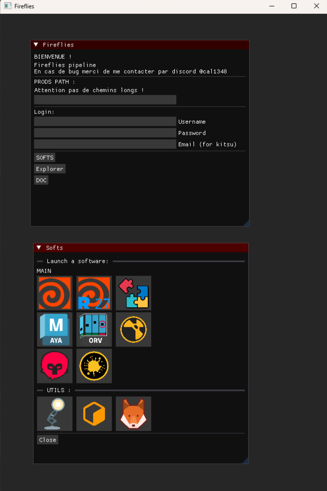
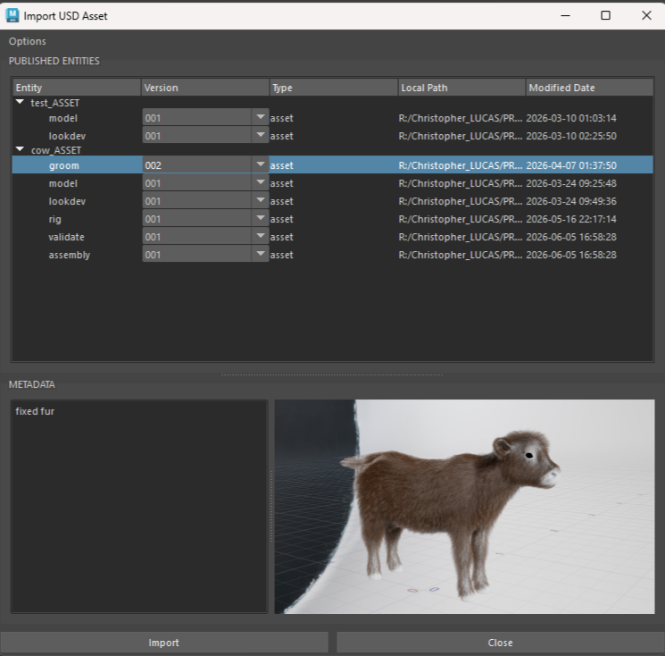
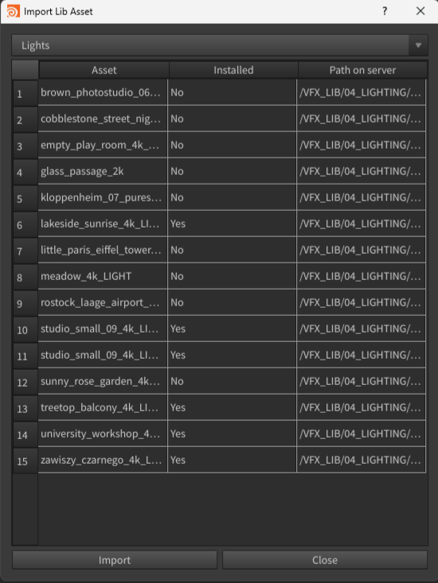
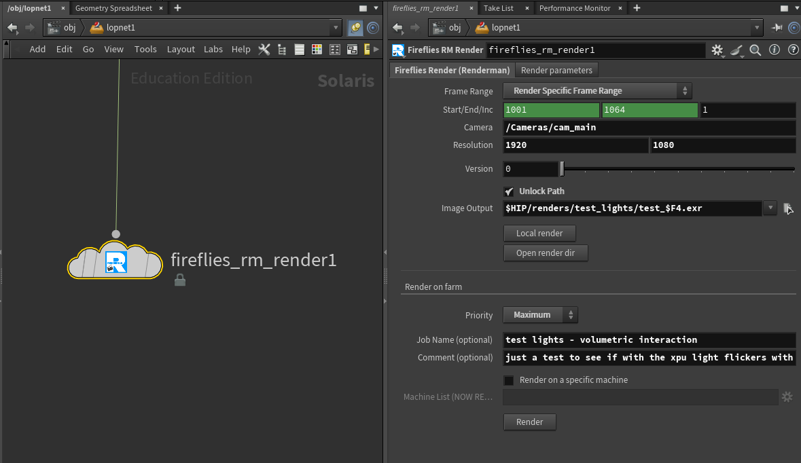
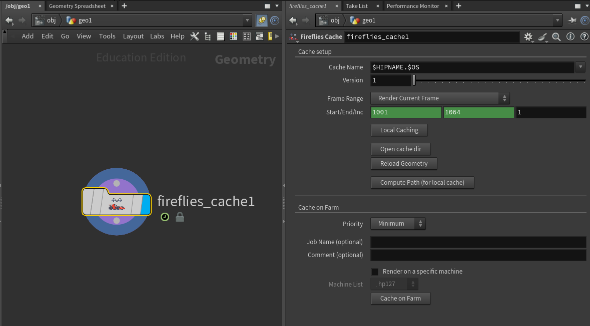

Fireflies
pipeline VFX orienté USDFireflies est un pipeline développé comme projet de fin d'études, pensé pour supporter les besoins de projets CGI avec RenderMan en USD. Il s'agit d'un écosystème complet permettant à une équipe de travailler ensemble, sur un ou plusieurs projets, en favorisant la coordination et le partage d'informations.
Fireflies répond aux besoins des productions VFX, en permettant un suivi des tâches, fichiers, versions, et des calculs. Ce pipeline répond également à des besoins de coordination et d'échanges qui dans des productions en équipes sont des soucis récurrents.
Sans Fireflies
- Chercher les bonnes versions de plans, assets, fichiers divers manuellement.
- Envoi manuel de versions, renommage et planification manuelle.
- Révision manuelle des versions.
- Gestion des rendus manuelle.
Avec Fireflies
- Trouver rapidement ce dont on a besoin, le bon fichier, et la bonne version.
- Vérification, publication, et suivi d'un plan ou d'un asset en un clic.
- Suivi et mise à jour automatique des tâches entre les départements, les tâches suivantes se mettent à jour automatiquement.
- Intégration complète d'un outil de suivi de production et de révision (Kitsu).
- Gestion des rendus et calculs automatisée, et contrôlée.
- Intégration complète de l'architecture USD
Suivez un plan, de la conception au rendu final.
Le studio assigne une tâche à un artiste, dans l'outil de suivi de production consultable par toute l'équipe. L'artiste sait ensuite quelles tâches il doit réaliser, leur importance, le temps dédié à chaque tâche, et dans quel contexte.
Suivi de production via Kitsu (API Gazu), résolution de contexte local et distant intégrée directement dans les DCC.
L'artiste récupere via les outils inclus toutes les ressources nécessaires et une fois son travail terminé il "publie" son travail. Le système de publication s'occupe de vérifier la conformité, et corriger en conséquence. Le travail est sauvegardé au bon endroit, avec la bonne nomenclature et est mis à jour pour la production. Les autres départements peuvent ensuite récuperer son travail.
Le système de publish est basé sur Pyblish, et commun entre tous les DCC (Houdini, Maya). Tout les fichiers sont écrits en USD avec une prise en charge des familles (asset, shot, dépendance d'animation).
Avant que le travail parte directement a la prochaine tache ou rendu, un responsable vérifie et valide le travail a travers un logiciel dédié permettant de visualiser chaque tache, leurs status, versions, previews. De cette maniere tout le monde peut ensuite travailler sur une version validée commune.
Le Fireflies Resolver (application basé sur PySide) pilote des layerStacks USD dédiés (à valider, valide, assemblage final).
Une fois validé le plan part automatiquement en rendu, avec RenderMan, sans qu'aucun fichier n'ait à être ouvert, déplacé, ou préparé à l'avance; tout se fait automatiquement.
Les jobs sont soumis à Deadline, de la génération des fichiers USD en local (ou sur la farm) au rendu via husk.
- Python
- C++ (Launcher)
- USD
- Houdini
- Maya
- Kitsu
- Deadline
- Pyblish
Features
Launcher & Contexte
Le launcher permet de lancer les DCC dans le bon environnement. Le système de contexte permet de résoudre le contexte de production (séquence, shot, tâche) à partir du chemin du fichier (soumis à la nomenclature et générés depuis les outils de contexte).
Publish unifié
Un systeme de publish basé sur Pyblish, partagé entre Houdini et Maya, avec un système de familles dédié pour les entités (assets, shots) avec une gestion des dépendances notamment pour les animations.
Fireflies Resolver
Une application basé sur PySide permettant de piloter la validation des entités avec des layerStacks USD, des callbacks de validation, callbacks au tracker de production, et envoi des rendus de livraison. Permet une visualisation claire et propre des étapes de validation, tout en les rendant flexibles.
Shot builder dynamique
Les tâches publiées mettent à jour automatiquement les layerStacks de travail dépendantes (ex: FX -> Lighting); tous les départements ont toujours une version de travail courante et flexible.
Production Tracking (Kitsu)
Intégration complète de Kitsu via l'API Gazu, les tâches, status, assignations relatives aux assets et shots. Le contexte dans les DCC est directement synchronisé à Kitsu. Les artistes peuvent également accéder aux informations depuis le portail, ou directement depuis les DCC.
Render Farm (Deadline)
Gestion automatisée des calculs via Deadline. Génération et préparation des jobs (génération des fichiers USD, job de rendu Husk) et envoi sur la farm. Avec des outils intégrés liés a RenderMan et Solaris.
Le pipeline et ses outils en images
Launcher & Contexte

Gestion des assets et publish


Validation et livraison (Fireflies Resolver)
Calculs divers (via Deadline)


Ce pipeline contient encore d'autres outils ! Gestionnaire des lumières dans solaris, textures, previews automatisées pour review et gestion de libs supplémentaires.